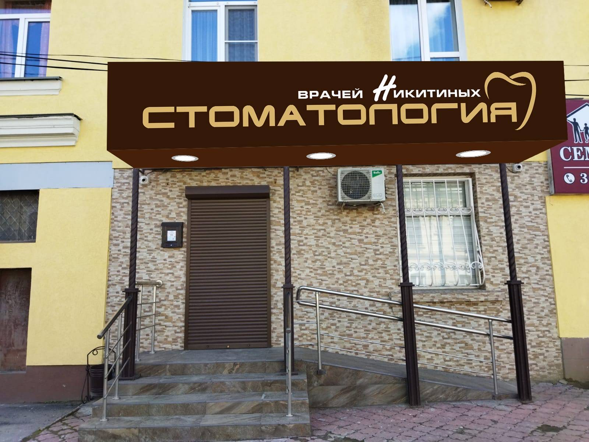
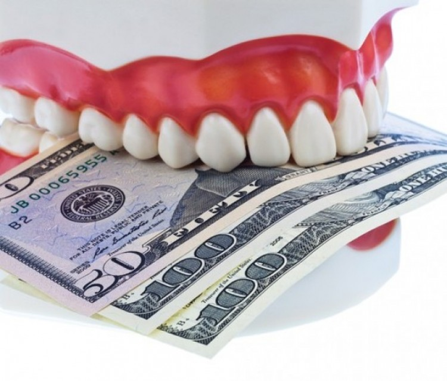

Как меня развели в частной стоматологии и как я пытался с ними бороться Сие действие происходило в городе Пенза. Решив однажды почистить зубки ультразвуком мне сообщили что у меня аж 19 кариозных зубов с глубоким кариесом. Я удивился, зубы не болели никогда. Доверился стоматологу и он мне полечил 17 как я потом понял здоровых зубов. Почему сейчас я считаю что зубы были здоровые? Зубы никогда не болели и прекрасно пережевывали пищу, не было проблем с ЖКТ. Когда я понял что меня обманули я написал письмо в страховую компанию по которой лечил зубы, имена стёрты. Вот письмо:  Хочу рассказать о своём опыте лечения зубов по ДМС *** в клинике г. Пенза ***. Изначально узнал что данная клиника входит в перечень клиник предоставляющих свои услуги по дмс. Записался на ультразвуковую чистку зубов. Приём прошел нормально, но в конце процедуры врач ни с того ни с сего начал проводить осмотр и нашёл у меня множество кариозных зубов. Фотопротокол лечения, то есть кариес он не сделал, мне стоило на данном этапе догадаться что тут что-то не так, но я доверял врачам тогда. Наличие кариеса врач не подтвердил ни фотопротоколом, ни рентгеном зубов. Потому что им банально невыгодно если к ним будут приходить здоровые пациенты, можно же зубной камень, поверхностный кариес или пигментное пятно выдать за глубокий кариес. Я согласился на лечение узнав что могу пролечить зубы бесплатно по дмс. Врач лечил по 2 зуба за приём, без коффердама, без ассистентки. Ассистентка была, но она лишь клала одеяло и уходила, в процессе лечения стоматологу не помогала. Приёмы проходили быстро, иногда врач даже забывал вынуть ватку. Я не обращал на это вниманием, считал что можно верить врачам. Негативные последствия от лечения заметил примерно спустя месяц, когда начались проблемы с жкт, тяжесть в желудке и проблемы со сном, связанные с проблемой с жкт. Не понимал в начале в чем дело, что происходит, недавно всё было в порядке. Спустя время я понял что зубы жуют гораздо хуже, нарушена жевательная функция зубов. Стал думать почему, вспомнил о так называемом лечении и понял зубы не такие как раньше. Анатомия зубов совершенно не восстановлена, если до лечения зубов они имели выпуклую форму с буграми и фиссурами, то сейчас они плоские, похожие на ямку, потому что так, вероятнее всего, проще ставить пломбу, у врача не было стимула проводить щадящее к зубам лечение, проще же спилить зуба побольше и засунуть туда пломбу. Он хотел сделать быстро, оформить приём и получить деньги по дмс. Ничего не могу сказать о *** как о враче, потому что не владею медицинским образованием, но как бизнесмен он неплох, меркантильный, жаль что стоматологию он выбрал местом где можно зарабатывать деньги. Меньше бы навредил другим людям. Вряд ли для таких людей медицина это призвание, для них медицина есть бизнес, а в бизнес они не пошли потому что они знают что там их сожрут с потрохами настоящие предприниматели. Спустя 1,5 месяца после лечения появился привкус во рту который особенно ярок по ночам, что также мешает спать. Предполагаю что данный привкус связан с использованием некачественных стоматологических материалов. Вы даже не представляете какой вред здоровью может нанести дефицит сна. Бесплатный сыр бывает только в мышеловке, жаль я это понял потратив свое собственное здоровье. Врачи, которые обманывают пациентов и халтурят, не должны работать. Я приходил к главному врачу клиники, посмотреть на пломбы. Он сказал что не видит проблем. Жаловался на то что пища забивается между зубов после лечения. Он посмотрел и сказал что не видит проблем, потом попросил сделать снимок, на котором он увидел дырочку и предложил поставить пломбу, хотел продолжить и дальше сверлить родные ткани моих зубов хотя я был на лечении у его коллеги полгода назад. Через два месяца когда проблемы со здоровьем не исчезали я снова записался к глав врачу клинику и когда он увидел меня, то почти сразу сказал "Вы у кого лечились? Причём здесь я? " То есть главному врачу клиники безразлично качество работы его коллег. А на жалобы на жевательную функцию зубов ничего не ответил, хотя он стоматолог, он обязан и он точно знает какие проблемы могут появиться у пациентов если не восстановить жевательную анатомию зубов. Но он никак не прокомментировал ситуацию, промолчал. Ему не хочется портить отношения с коллегой из-за какого то там пациента хотевшего по дмс пролечить зубы. Ну а в чём вина пациента? В том что я доверился врачу, думая что если стоматология частная то там лечат хорошо или то что доверился выбору страховой компании, которые сотрудничая с клиникой подтверждают качество этой клиники. В чем моя вина? В наивности и в глупости и вера в то что все в этом мире работают порядочно, а обман и халтура ни в каком виде ни в какой форме не допустимы в медицине. Но мир оказался жесток со мной и я усвоил урок, но справедливость должна быть восстановлена. Мне не нужны извинения, материальные компенсации. Я хочу чтобы дальше никто не попался в эту ловушку, хочу чтобы компания ДМС *** расторгла сотрудничество с ***. Ну а насчёт так называемых врачей клиники, пускай отвечают за свои дела потом перед Cудом Божьим и своей совестью если она у них вообще есть. Врач это священная профессия и в ней нет места обману и халтуре. Я не имею медицинского образования и могу быть в чем то не прав, но врать мне смысла нет, я всего лишь хочу уберечь людей от ошибки совершенной мной. Главный врач клиники - ***. Врач у которого я проходил лечение - ***.
Вот ответ клиники после жалобы в дмс компанию: Наша клиника сотрудничает с вами несколько лет. Мы работаем с *** года и очень тщательно подходим к качеству лечения и соответственно материалам. Такой отзыв как сейчас, к нам поступил впервые. Действительно этот пациент лечился в нашей клинике. Пациенту были вылечены зубы по кариесу качественно, современным материалом Гармонайс (Германия). Фотопротокол, кафердам не входят в программу, рентген зубов при кариесе не всегда проводится. После лечения врач естественно проводит осмотр для выявления патологий и заполнения зубной формулы. Пациент лечился в 2023 году и был всегда очень доволен. Продолжил лечение в 2024 году. Если бы его не устраивал врач и клиника, он мог бы сразу отказаться от сотрудничества с нами, однако он вылечил все зубы по имеющимся жалобам. К сожалению, мы встречаемся в нашей профессии с негативом. Благодарим за взаимовыгодное сотрудничество. Выводы ясны, медицина и страховые компании превратились в чистый бизнес. Задача бизнес это извлечение прибыли. Каким путём они это достигают никого не волнует, главное чтобы их не закрыли за нарушение закона. Ваша жизнь и здоровье нужна только вам и вашим родным. Берегите себя.